МПК-Пересвет — платформа для создания моделей технических объектов, от одного агрегата до целого предприятия. Это базовый курс: он быстро проводит от первого параметра до готового экрана на одном учебном примере. Детали каждой темы разбирает расширенный курс.
базовый курс
9 коротких уроков
один сквозной пример
от дерева модели до экрана

Введение
Модель объекта
Главная задача платформы — создание модели объекта, который мы автоматизируем. Модель описывает объект целиком: из каких частей он состоит, какие параметры есть у каждой части, откуда берутся значения этих параметров и что должно происходить, когда они меняются.
Параметр — любая величина, которая характеризует объект: давление в трубопроводе, уровень в баке, ток двигателя, температура в помещении, состояние «включён / выключен». В платформе параметр называется тегом. Значения тега хранятся вместе со временем, поэтому по каждому параметру доступно не только текущее значение, но и вся история.
Объектом может быть отдельный насос, технологическая линия, цех или целое предприятие. Модель строится постепенно: сначала несколько параметров, затем вложенные узлы, расчёты, тревоги, подключение приборов, камер и внешних систем.
Модель — единая точка доступа к данным объекта. Коннекторы записывают в теги показания приборов, методы рассчитывают значения и реагируют на события, экраны Grafana и внешние информационные системы читают данные по тем же тегам. Где физически хранятся данные — в PostgreSQL, VictoriaMetrics, во внешней базе или их возвращает метод, — для потребителя значения не имеет: он обращается к тегу модели.
Модель в МПК-Пересвет состоит из двух частей.
Статическая модель
Иерархия сущностей: объекты, теги, тревоги, методы, расписания. Глубина дерева не ограничена — от отдельного датчика до предприятия. Каждое значение тега хранится с меткой времени и кодом качества — признаком того, можно ли доверять значению.
Динамическая модель
Набор методов, которые запускаются по событиям: изменилось значение тега, возникла тревога, сработало расписание. Метод рассчитывает значения тегов, определяет, наступила ли тревога, формирует отчёт или отправляет письмо.
Источники событий тоже входят в модель. Расписание генерирует события по таймеру: каждую минуту, каждый час, раз в сутки. Тревога сообщает, что с объектом что-то не так. В простом случае значение параметра выходит за допустимую границу — например, уровень в баке поднимается выше 90 %. В сложном тревогу определяет метод: выполняет расчёт по нескольким параметрам и решает, возникла тревога или нет.
Область применения
Платформа подходит везде, где данные нужно собрать, сохранить, обработать и показать — от проектов автоматизации на промышленных предприятиях до отдельных прикладных приложений.
Промышленная автоматизация
Диспетчеризация цехов и производственных площадок: сбор данных с контроллеров и приборов, мнемосхемы, тревоги, история технологических параметров.
Мониторинг оборудования
Наработка, режимы и состояние агрегатов. Методы считают показатели эффективности, выявляют отклонения и готовят данные для планирования обслуживания.
Учёт энергоресурсов
Электроэнергия, тепло, вода и газ по счётчикам и узлам учёта. Балансы, удельные расходы, отчёты за смену, сутки и месяц.
Интеграция информационных систем
Единая модель поверх АСУ ТП, MES, ERP и лабораторных баз. Платформа собирает их данные в одном месте и сама служит источником данных для других систем.
Испытательные стенды и лаборатории
Запись измерений во время испытаний, расчёт результатов по методике, формирование протоколов и архив испытаний.
Прикладные приложения с данными
Умная теплица, сеть метеостанций, мониторинг экологии, учёт работы спецтехники — любые задачи, где поток данных от датчиков нужно хранить, обрабатывать и показывать.
Что даёт платформа
Одна модель вместо разрозненных систем
Коннекторы читают приборы и контроллеры, камеры отдают видеопоток, интеграционные хранилища подключают внешние базы данных. Всё это становится тегами одной модели.
Теги, которые вычисляет метод
Значение тега не обязательно хранится в базе. Его может вернуть метод в момент запроса — так в модель попадают расчёты и данные других систем без копирования.
Источник данных для других систем
Внешние системы читают теги через API платформы и в одном формате получают историю, расчётные значения и данные подключённых источников.
Экраны
Экраны в Grafana строятся по тем же тегам: тренды, тревоги, видео, табличные данные из внешних баз.
Повторное использование
Методы оформляются пакетами и переносятся между проектами. Пакет можно защитить лицензией.
Чему научитесь
Установить платформу, создать первые теги и собрать из них иерархию объекта.
Записывать значения в теги и читать их: последнее значение и историю за интервал.
Писать методы, которые рассчитывают значения тегов и определяют тревоги.
Подавать данные в платформу из своего скрипта через API, как это делает любая внешняя программа.
Запускать методы по расписанию.
Подключить камеру и собрать сводный экран в Grafana.
С чего можно начинать
Нужно
Виртуальная машина с Ubuntu Server и Docker (раздел «Подготовка»), уверенная работа в браузере и командной строке. Установку платформы разбирает первый урок.
Не обязательно
Знание Python, SQL и Grafana. Всё необходимое объясняется в тех уроках, где оно появляется.
Учебный пример
Насосная станция: бак, насос, датчики давления, тока и уровня. Каждый урок добавляет к ней что-то новое.
Подготовка
Все уроки курса проводятся на виртуальной машине с Ubuntu Server 26.04.1, на которой установлены Docker Engine и плагин Docker Compose. Платформа работает в контейнерах, поэтому подготовьте машину до первого урока.
доступ в интернет: при первом запуске скачиваются образы контейнеров;
сетевой адрес (IPv4), по которому виртуальная машина доступна из браузера на вашем компьютере.
Для установки платформы от вас потребуется умение работать в командной строке Linux и базовые знания по администрированию Linux: установка пакетов, работа с файлами и правами доступа, настройка сети, запуск и остановка сервисов.
Программа
Каждый урок даёт минимум, чтобы пройти шаг и двигаться дальше. В конце урока — список тем, которые подробно разбирает расширенный курс.
01Установка платформы
Установка из готового дистрибутива одной командой.